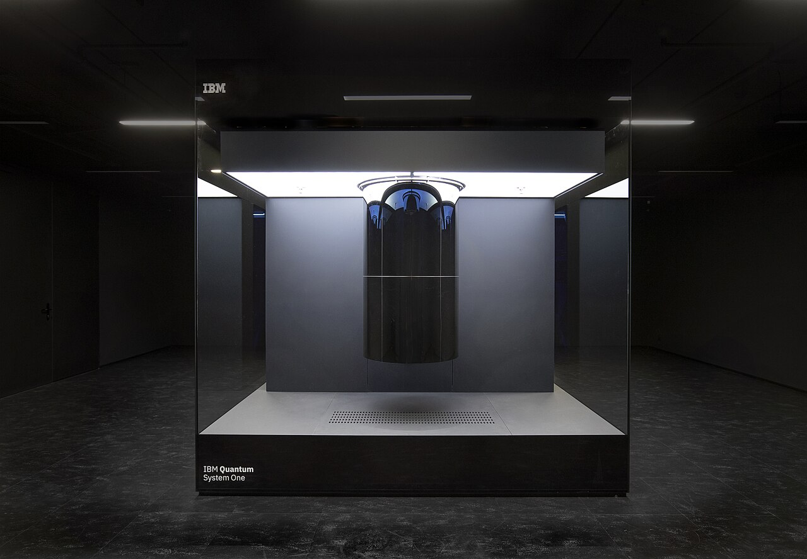

اگر کسی در گذشته میگفت روزی کامپیوترهایی خواهیم داشت که در جیب جا میشن، از طریق شبکه با میلیونها دستگاه ارتباط برقرار میکنن و میتونن متن و تصویر تولید کنن، شاید این تصویر برای بسیاری از مردم غیرقابلتصور بود.
اما فناوری بارها نشون داده که آینده همیشه شبیه ادامه ساده گذشته نیست.
برای همین، بهتره بهجای پیشبینیهای قطعی، مسیرهای مختلفی رو بررسی کنیم.
مسیر اول: تراشههای تخصصیتر
با رشد کاربردهای هوش مصنوعی، نیاز به پردازشهای خاص افزایش پیدا کرده.
پردازندهiهای عمومی همچنان نقش مهمی دارن، اما شتابدهندههای تخصصی هم برای وظایف مشخص طراحی میشن.
در آینده، ترکیب معماریهای مختلف ممکنه اهمیت بیشتری پیدا کنه.
با این حال، افزایش توان محاسباتی همیشه به معنی کاهش هزینه یا مصرف انرژی نیست.
مهندسان باید بین عملکرد، انرژی، هزینه، اندازه و محدودیتهای تولید مصالحه برقرار کنن.
مسیر دوم: محاسبات کوانتومی
در کامپیوترهای معمولی، اطلاعات دیجیتال معمولاً با بیتi نمایش داده میشن.
در محاسبات کوانتومی، از کیوبیتi۱ها استفاده میشه.
کیوبیتها بهدلیل ویژگیهای مکانیک کوانتومی، با بیتهای کلاسیک تفاوت دارن.
این تفاوت میتونه برای طراحی الگوریتمiهایی که از ویژگیهای کوانتومی استفاده میکنن مهم باشه.
اما یک نکته ضروری وجود داره:
کامپیوتر کوانتومی قرار نیست بهطور خودکار همه کارها رو سریعتر از کامپیوتر معمولی انجام بده.
مزیت محاسبات کوانتومی به مسئله، الگوریتم، سختافزار و شرایط اجرا بستگی داره.
ساخت سامانههای کوانتومی پایدار و قابلاستفاده هم با چالشهای فنی مهمی روبهروست.

پس بهتره بهجای تصور «کامپیوتری که همهچیز رو فوری حل میکنه»، درباره کاربردهای مشخص و محدودیتهای واقعی این فناوری صحبت کنیم.
مسیر سوم: آینده برنامهنویسی
ابزارهای برنامهنویسی در حال تغییرن.
تکمیل خودکار کد، تولید تست، تحلیل خطا و ابزارهای مبتنی بر هوش مصنوعیi میتونن بخشهایی از کار توسعه نرمافزار رو آسانتر کنن.
اما یک نرمافزار قابلاعتماد فقط مجموعهای از خطوط کد نیست.
باید نیاز کاربر رو درست بفهمیم، معماری مناسبی انتخاب کنیم، خطاها رو بررسی کنیم، امنیت رو جدی بگیریم و عملکرد سیستم رو در شرایط واقعی بسنجیم.
ممکنه نقش برنامهنویس در آینده تغییر کنه؛ اما نیاز به فهم مسئله و بررسی صحت راهحل از بین نمیره.
مسیر چهارم: امنیت در دنیای متصل
هرچه تعداد دستگاههای متصل بیشتر بشه، حفاظت از اطلاعات و سامانهها اهمیت بیشتری پیدا میکنه.
امنیت سایبری فقط به ساخت رمز عبور قوی محدود نیست.
طراحی امن نرمافزار، مدیریت دسترسی، بهروزرسانی، رمزنگاری، حفاظت از زیرساخت و آموزش کاربران هم اهمیت دارن.
پیشرفت فناوری ممکنه روشهای جدیدی برای محافظت از اطلاعات ایجاد کنه، اما همزمان چالشهای تازهای هم به وجود میاره.
مسیر پنجم: انرژی و محیط زیست
کامپیوترها و مراکز داده برای فعالیت به انرژی نیاز دارن.
توسعه سامانههای بزرگتر و پرقدرتتر، مسئله مصرف انرژی و منابع فیزیکی رو مهمتر میکنه.
بهینهسازی سختافزار، طراحی نرمافزار کارآمدتر و استفاده مناسب از زیرساختها میتونن به کاهش هزینههای محاسباتی کمک کنن.
آینده کامپیوتر فقط به این مربوط نیست که چقدر سریعتر میشه محاسبه کرد؛ بلکه به این هم مربوطه که این محاسبات با چه هزینهای انجام میشن.
آیا میتونیم آینده رو پیشبینی کنیم؟
نه بهطور کامل.
میتونیم روندهای فعلی رو بررسی کنیم، فناوریهای در حال توسعه رو بشناسیم و سناریوهای محتمل رو بسازیم.
اما پیشرفت علمی به عوامل زیادی وابسته است و بعضی از تغییرات مهم، نتیجه ایدههایی هستن که پیشبینی اونها دشواره.
برای همین، بهتره بین فناوری موجود، پژوهش در حال انجام و سناریوی احتمالی آینده تفاوت قائل بشیم.
کاوشگر خط زمان
خط زمانی فیلترپذیر رویدادهای سختافزار، نرمافزار، شبکه و هوش مصنوعی. برای هر رویداد، نوعش (ابزار، ماشین مکانیکی، ایده، الکترونیکی…) و محدودیت روایت «اولین» را ببین.
پاورقیها و توضیحات
- کیوبیت: واحد اطلاعات در محاسبات کوانتومی. برخلاف بیت که یا ۰ است یا ۱، حالت کیوبیت میتونه ترکیبی از هر دو باشه تا وقتی اندازهگیری بشه؛ ولی این به معنی «سریعتر برای همهٔ کارها» نیست. ↑
این توضیحها را تحریریه نوشته؛ پیش از انتشار نهایی باید با منبع تطبیق داده شوند.
نسخهٔ صوتی این بخش
اگر حوصلهٔ خوندن نداری، همین بخش رو بهصورت صوتی گوش بده.
گویندهٔ خودکار مرورگر (جایگزین)
منابع پیشنهادی برای راستیآزمایی
متن این بخش ارجاع درونمتنی ندارد؛ فهرست زیر نقطهٔ شروع بررسی تحریریه است، نه تأیید ادعاهای تکتک جملهها. برای این بخش هنوز منبع مشخصی ثبت نشده است؛ فهرست عمومی منابع شماره